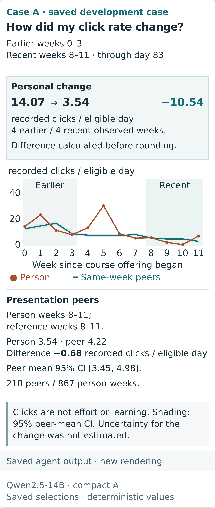
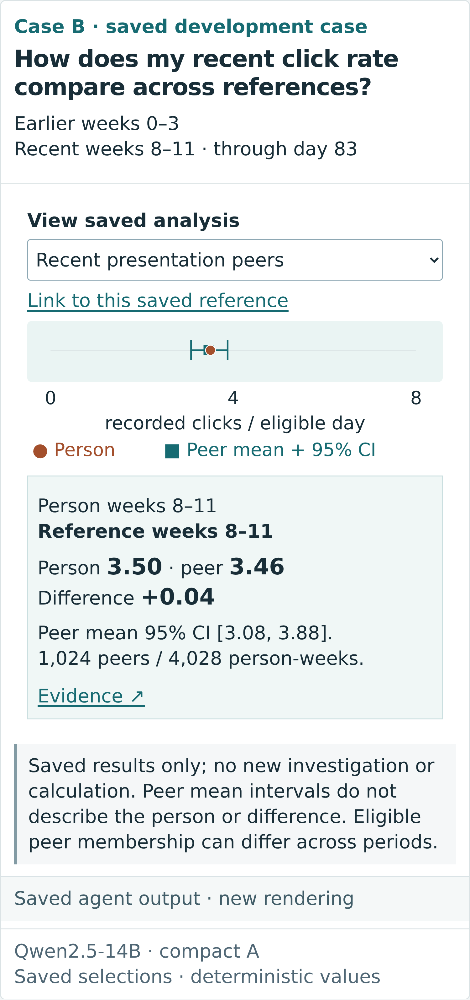
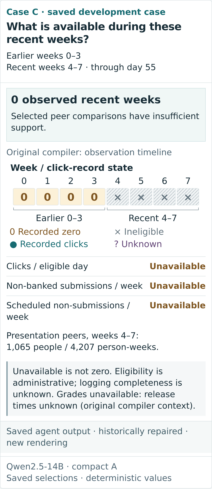
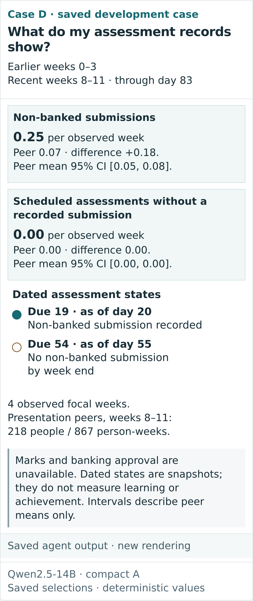
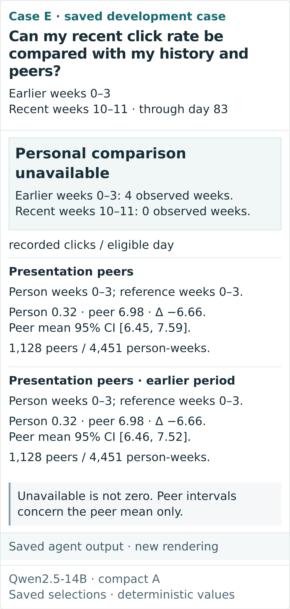
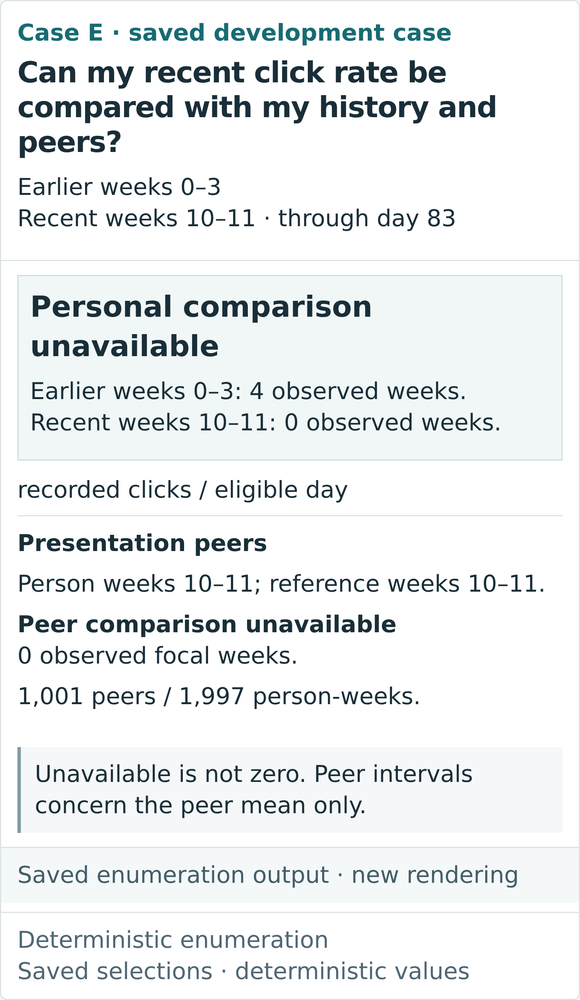

Different questions.
Evidence kept in context.
Explore the selected answers, their original calculation and compiler context. These are new renderings of saved results, with no new inference, accuracy evaluation or usability study.

Personal progress
Earlier and recent windows, with separate personal and peer answers.

Reference comparison
Select a saved comparison. The person stays fixed; the reference changes.

Limited observations
Recorded zero, administrative ineligibility and unavailable quantities.

Assessment activity
Submission measures and dated assessment states, without achievement ratings.

Preserved incomplete answer
The original earlier-window peer selections and personal insufficiency.

Enumeration counterpart
The same question with a separately explicit recent-peer insufficiency answer.
Paper figure candidates
Designed for the verified SCITEPRESS text width of 158.0134 mm. Main candidates use readable paired panels; the four-view trial is retained for inspection.
- Adaptation: personal progress and limited observations
Final-size proof · PDF · PNG - A controlled saved-reference change
Final-size proof · PDF · PNG - Correct numbers, incomplete answer
Final-size proof · PDF · PNG - Additional adaptation: references and assessments
Final-size proof · PDF · PNG - Four-panel reduction trial (not recommended at paper size)
Final-size proof · PDF · PNG
{kind=link}
{kind=link}
{kind=link}
{kind=link}
{kind=link}
Evidence and reproduction
Agent or enumeration: answer selection. Analytical tools: all numerical values. Original compiler: tagged required context. Presentation v2: layout, chart styling and saved-reference emphasis. Numerical binding and question completeness are separate properties.
Sources and hashes · Capture states · Dimensions and figure provenance · Reproduction · Preserved pre-draft gallery